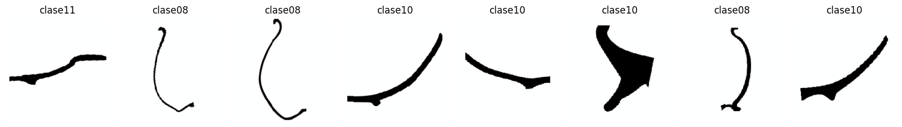
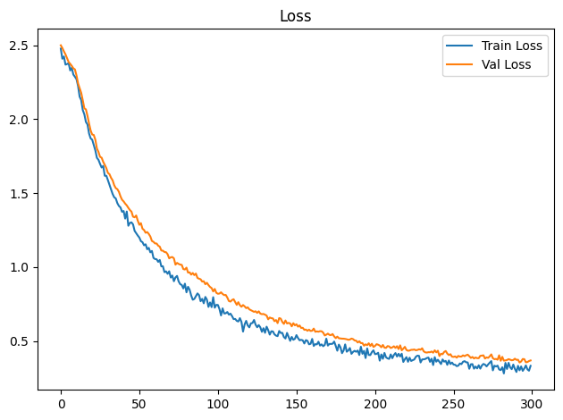
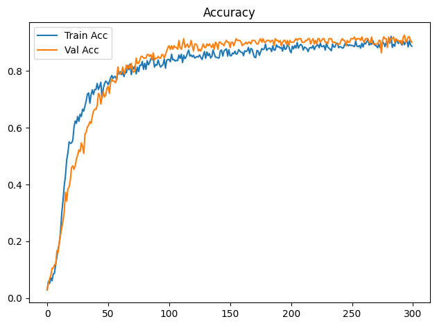
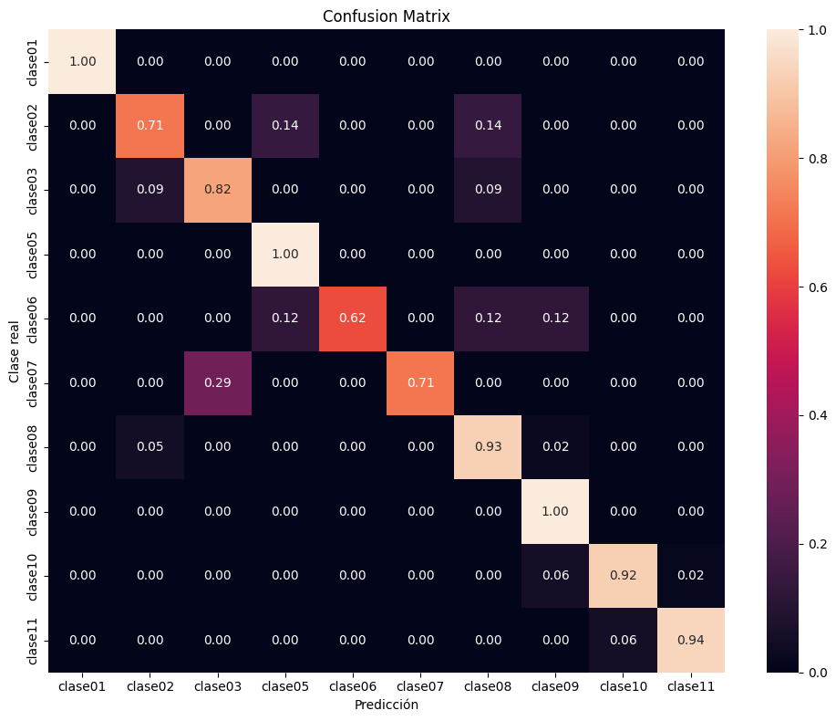

Dispositivo utilizado para procesamiento: CUDA - NVIDIA GeForce GTX 1650Entrenamiento de CNN ResNet-18 con Transfer Learning
Objetivos
- Construir un modelo baseline de clasificación mediante transfer learning con ResNet18 preentrenada.
- Entrenar inicialmente solo la capa clasificadora y descongelar
layer4enUNFREEZE_EPOCHcon una tasa de aprendizaje menor. - Aplicar transformaciones y aumentación de datos al conjunto de entrenamiento.
- Entrenar y validar el modelo registrando loss y accuracy por época.
- Detener el entrenamiento si val_loss no mejora suficientemente durante la paciencia configurada.
- Evaluar el modelo de la mejor época de validación sobre el conjunto de prueba.
- Analizar los resultados mediante accuracy, precision, recall, F1-score, reporte de clasificación y matriz de confusión normalizada.
- Guardar los pesos restaurados de la mejor época de validación (o los finales si se desactiva la parada anticipada).
Dispositivo para procesamiento
División de datos
La pertenencia de cada imagen a train, val o test se lee de la metadata generada por el notebook de división. La relación se realiza mediante ruta_relativa; por tanto, el split no se recalcula aunque cambien la semilla o los parámetros del entrenamiento.
Dataset seleccionado: completos
Directorio de datos: /home/rafael/Dev/vasijas/data/10.cuadrados_divididos_en_train_val_y_test
Metadata de split: data/10.cuadrados_divididos_en_train_val_y_test/metadata.csv
Clases: clase01 clase02 clase03 clase05 clase06 clase07 clase08 clase09 clase10 clase11
Split persistido -> train: 749, val: 161, test: 161
Conteo train por clase: [18, 32, 50, 39, 36, 34, 196, 14, 248, 82]
Pesos de clase: [4.161, 2.341, 1.498, 1.921, 2.081, 2.203, 0.382, 5.35, 0.302, 0.913]Epoch 1/300
Train Loss: 2.4778 | Train Acc: 0.0294 | Val Loss: 2.5002 | Val Acc: 0.0311
Tiempo de epoch: 0:00:08.486402
Epoch 2/300
Train Loss: 2.4091 | Train Acc: 0.0587 | Val Loss: 2.4818 | Val Acc: 0.0497
Tiempo de epoch: 0:00:05.178145
Epoch 3/300
Train Loss: 2.4245 | Train Acc: 0.0521 | Val Loss: 2.4592 | Val Acc: 0.0683
Tiempo de epoch: 0:00:05.187729
Epoch 4/300
Train Loss: 2.3694 | Train Acc: 0.0721 | Val Loss: 2.4387 | Val Acc: 0.0807
Tiempo de epoch: 0:00:05.110381
Epoch 5/300
Train Loss: 2.3734 | Train Acc: 0.0614 | Val Loss: 2.4120 | Val Acc: 0.1056
Tiempo de epoch: 0:00:05.236149
Epoch 6/300
Train Loss: 2.3792 | Train Acc: 0.0854 | Val Loss: 2.3869 | Val Acc: 0.1056
Tiempo de epoch: 0:00:05.085249
Epoch 7/300
Train Loss: 2.3301 | Train Acc: 0.0881 | Val Loss: 2.3747 | Val Acc: 0.1180
Tiempo de epoch: 0:00:05.090811
Epoch 8/300
Train Loss: 2.3481 | Train Acc: 0.1202 | Val Loss: 2.3608 | Val Acc: 0.1180
Tiempo de epoch: 0:00:05.206393
Epoch 9/300
Train Loss: 2.3023 | Train Acc: 0.1469 | Val Loss: 2.3445 | Val Acc: 0.1677
Tiempo de epoch: 0:00:05.168942
Epoch 10/300
Train Loss: 2.2875 | Train Acc: 0.1736 | Val Loss: 2.3374 | Val Acc: 0.1615
Tiempo de epoch: 0:00:05.193649
Epoch 11: se descongela layer4 con lr=1.00e-06 (head lr=1.00e-05)
Epoch 11/300
Train Loss: 2.2712 | Train Acc: 0.1949 | Val Loss: 2.2964 | Val Acc: 0.1988
Tiempo de epoch: 0:00:08.630666
Epoch 12/300
Train Loss: 2.2253 | Train Acc: 0.2377 | Val Loss: 2.2424 | Val Acc: 0.2236
Tiempo de epoch: 0:00:06.854415
Epoch 13/300
Train Loss: 2.1524 | Train Acc: 0.3004 | Val Loss: 2.2103 | Val Acc: 0.2484
Tiempo de epoch: 0:00:06.859311
Epoch 14/300
Train Loss: 2.1300 | Train Acc: 0.3445 | Val Loss: 2.1785 | Val Acc: 0.2733
Tiempo de epoch: 0:00:06.856341
Epoch 15/300
Train Loss: 2.0619 | Train Acc: 0.3965 | Val Loss: 2.1283 | Val Acc: 0.3043
Tiempo de epoch: 0:00:06.896051
Epoch 16/300
Train Loss: 2.0331 | Train Acc: 0.4312 | Val Loss: 2.0734 | Val Acc: 0.3727
Tiempo de epoch: 0:00:06.975459
Epoch 17/300
Train Loss: 1.9816 | Train Acc: 0.4860 | Val Loss: 2.0667 | Val Acc: 0.3416
Tiempo de epoch: 0:00:06.892790
Epoch 18/300
Train Loss: 1.9648 | Train Acc: 0.5113 | Val Loss: 2.0227 | Val Acc: 0.3851
Tiempo de epoch: 0:00:06.959527
Epoch 19/300
Train Loss: 1.9034 | Train Acc: 0.5501 | Val Loss: 1.9710 | Val Acc: 0.3913
Tiempo de epoch: 0:00:06.816719
Epoch 20/300
Train Loss: 1.8703 | Train Acc: 0.5447 | Val Loss: 1.9242 | Val Acc: 0.4161
Tiempo de epoch: 0:00:06.849670
Epoch 21/300
Train Loss: 1.8618 | Train Acc: 0.5461 | Val Loss: 1.8966 | Val Acc: 0.4596
Tiempo de epoch: 0:00:06.783311
Epoch 22/300
Train Loss: 1.8249 | Train Acc: 0.5554 | Val Loss: 1.8934 | Val Acc: 0.4658
Tiempo de epoch: 0:00:06.831958
Epoch 23/300
Train Loss: 1.7890 | Train Acc: 0.6021 | Val Loss: 1.8616 | Val Acc: 0.4534
Tiempo de epoch: 0:00:06.875959
Epoch 24/300
Train Loss: 1.7388 | Train Acc: 0.6235 | Val Loss: 1.8019 | Val Acc: 0.4658
Tiempo de epoch: 0:00:06.796390
Epoch 25/300
Train Loss: 1.7253 | Train Acc: 0.6155 | Val Loss: 1.7787 | Val Acc: 0.4907
Tiempo de epoch: 0:00:06.902034
Epoch 26/300
Train Loss: 1.6978 | Train Acc: 0.6395 | Val Loss: 1.7452 | Val Acc: 0.5031
Tiempo de epoch: 0:00:06.750781
Epoch 27/300
Train Loss: 1.6734 | Train Acc: 0.6222 | Val Loss: 1.7401 | Val Acc: 0.5217
Tiempo de epoch: 0:00:06.845618
Epoch 28/300
Train Loss: 1.6842 | Train Acc: 0.6475 | Val Loss: 1.7119 | Val Acc: 0.5155
Tiempo de epoch: 0:00:06.854077
Epoch 29/300
Train Loss: 1.6175 | Train Acc: 0.6395 | Val Loss: 1.6916 | Val Acc: 0.5466
Tiempo de epoch: 0:00:06.773016
Epoch 30/300
Train Loss: 1.6176 | Train Acc: 0.6649 | Val Loss: 1.6691 | Val Acc: 0.5342
Tiempo de epoch: 0:00:06.812003
Epoch 31/300
Train Loss: 1.5878 | Train Acc: 0.6582 | Val Loss: 1.6372 | Val Acc: 0.5093
Tiempo de epoch: 0:00:06.785701
Epoch 32/300
Train Loss: 1.5559 | Train Acc: 0.6769 | Val Loss: 1.6282 | Val Acc: 0.5776
Tiempo de epoch: 0:00:06.813631
Epoch 33/300
Train Loss: 1.5253 | Train Acc: 0.6943 | Val Loss: 1.6038 | Val Acc: 0.5839
Tiempo de epoch: 0:00:06.779158
Epoch 34/300
Train Loss: 1.4945 | Train Acc: 0.7183 | Val Loss: 1.5867 | Val Acc: 0.6025
Tiempo de epoch: 0:00:06.831401
Epoch 35/300
Train Loss: 1.4722 | Train Acc: 0.7223 | Val Loss: 1.5537 | Val Acc: 0.6087
Tiempo de epoch: 0:00:06.906436
Epoch 36/300
Train Loss: 1.4642 | Train Acc: 0.6862 | Val Loss: 1.5341 | Val Acc: 0.6211
Tiempo de epoch: 0:00:06.808497
Epoch 37/300
Train Loss: 1.4324 | Train Acc: 0.7156 | Val Loss: 1.5270 | Val Acc: 0.6149
Tiempo de epoch: 0:00:06.868075
Epoch 38/300
Train Loss: 1.4133 | Train Acc: 0.7330 | Val Loss: 1.5092 | Val Acc: 0.6398
Tiempo de epoch: 0:00:06.900697
Epoch 39/300
Train Loss: 1.4032 | Train Acc: 0.7170 | Val Loss: 1.4784 | Val Acc: 0.6584
Tiempo de epoch: 0:00:06.817892
Epoch 40/300
Train Loss: 1.3738 | Train Acc: 0.7343 | Val Loss: 1.4553 | Val Acc: 0.6646
Tiempo de epoch: 0:00:06.844721
Epoch 41/300
Train Loss: 1.3793 | Train Acc: 0.7343 | Val Loss: 1.4442 | Val Acc: 0.6646
Tiempo de epoch: 0:00:06.811972
Epoch 42/300
Train Loss: 1.3278 | Train Acc: 0.7557 | Val Loss: 1.4290 | Val Acc: 0.6770
Tiempo de epoch: 0:00:06.841542
Epoch 43/300
Train Loss: 1.3757 | Train Acc: 0.7343 | Val Loss: 1.4171 | Val Acc: 0.7205
Tiempo de epoch: 0:00:06.827513
Epoch 44/300
Train Loss: 1.2794 | Train Acc: 0.7450 | Val Loss: 1.4007 | Val Acc: 0.7143
Tiempo de epoch: 0:00:06.791655
Epoch 45/300
Train Loss: 1.2988 | Train Acc: 0.7597 | Val Loss: 1.3856 | Val Acc: 0.6832
Tiempo de epoch: 0:00:06.902186
Epoch 46/300
Train Loss: 1.3022 | Train Acc: 0.7036 | Val Loss: 1.3750 | Val Acc: 0.7081
Tiempo de epoch: 0:00:06.857229
Epoch 47/300
Train Loss: 1.2885 | Train Acc: 0.7370 | Val Loss: 1.3406 | Val Acc: 0.7267
Tiempo de epoch: 0:00:06.946089
Epoch 48/300
Train Loss: 1.2449 | Train Acc: 0.7543 | Val Loss: 1.3368 | Val Acc: 0.7081
Tiempo de epoch: 0:00:06.777599
Epoch 49/300
Train Loss: 1.2290 | Train Acc: 0.7637 | Val Loss: 1.3488 | Val Acc: 0.7143
Tiempo de epoch: 0:00:06.831767
Epoch 50/300
Train Loss: 1.2133 | Train Acc: 0.7597 | Val Loss: 1.3137 | Val Acc: 0.7391
Tiempo de epoch: 0:00:06.815923
Epoch 51/300
Train Loss: 1.1997 | Train Acc: 0.7517 | Val Loss: 1.2859 | Val Acc: 0.7453
Tiempo de epoch: 0:00:07.003450
Epoch 52/300
Train Loss: 1.1752 | Train Acc: 0.7623 | Val Loss: 1.2971 | Val Acc: 0.7205
Tiempo de epoch: 0:00:06.901051
Epoch 53/300
Train Loss: 1.1683 | Train Acc: 0.7744 | Val Loss: 1.2594 | Val Acc: 0.7578
Tiempo de epoch: 0:00:06.892079
Epoch 54/300
Train Loss: 1.1472 | Train Acc: 0.7837 | Val Loss: 1.2505 | Val Acc: 0.7702
Tiempo de epoch: 0:00:06.833708
Epoch 55/300
Train Loss: 1.1542 | Train Acc: 0.7730 | Val Loss: 1.2321 | Val Acc: 0.7640
Tiempo de epoch: 0:00:06.918098
Epoch 56/300
Train Loss: 1.1205 | Train Acc: 0.7797 | Val Loss: 1.2368 | Val Acc: 0.7640
Tiempo de epoch: 0:00:06.855680
Epoch 57/300
Train Loss: 1.1300 | Train Acc: 0.7797 | Val Loss: 1.2242 | Val Acc: 0.7578
Tiempo de epoch: 0:00:06.857478
Epoch 58/300
Train Loss: 1.0998 | Train Acc: 0.7677 | Val Loss: 1.2069 | Val Acc: 0.7702
Tiempo de epoch: 0:00:06.790095
Epoch 59/300
Train Loss: 1.1090 | Train Acc: 0.7957 | Val Loss: 1.1766 | Val Acc: 0.8137
Tiempo de epoch: 0:00:06.818876
Epoch 60/300
Train Loss: 1.0620 | Train Acc: 0.7891 | Val Loss: 1.1708 | Val Acc: 0.7888
Tiempo de epoch: 0:00:06.897578
Epoch 61/300
Train Loss: 1.0542 | Train Acc: 0.7971 | Val Loss: 1.1598 | Val Acc: 0.7888
Tiempo de epoch: 0:00:06.874573
Epoch 62/300
Train Loss: 1.0529 | Train Acc: 0.7864 | Val Loss: 1.1595 | Val Acc: 0.7950
Tiempo de epoch: 0:00:06.884649
Epoch 63/300
Train Loss: 1.0353 | Train Acc: 0.7957 | Val Loss: 1.1446 | Val Acc: 0.8137
Tiempo de epoch: 0:00:06.836138
Epoch 64/300
Train Loss: 1.0479 | Train Acc: 0.7797 | Val Loss: 1.1382 | Val Acc: 0.7888
Tiempo de epoch: 0:00:06.898241
Epoch 65/300
Train Loss: 1.0048 | Train Acc: 0.7971 | Val Loss: 1.1121 | Val Acc: 0.8012
Tiempo de epoch: 0:00:06.740508
Epoch 66/300
Train Loss: 1.0053 | Train Acc: 0.7931 | Val Loss: 1.1107 | Val Acc: 0.8199
Tiempo de epoch: 0:00:06.954953
Epoch 67/300
Train Loss: 0.9655 | Train Acc: 0.8184 | Val Loss: 1.1019 | Val Acc: 0.8075
Tiempo de epoch: 0:00:06.819566
Epoch 68/300
Train Loss: 0.9708 | Train Acc: 0.8037 | Val Loss: 1.1007 | Val Acc: 0.8199
Tiempo de epoch: 0:00:06.842158
Epoch 69/300
Train Loss: 0.9543 | Train Acc: 0.8238 | Val Loss: 1.0869 | Val Acc: 0.8075
Tiempo de epoch: 0:00:07.022848
Epoch 70/300
Train Loss: 0.9715 | Train Acc: 0.7864 | Val Loss: 1.0589 | Val Acc: 0.8261
Tiempo de epoch: 0:00:06.829608
Epoch 71/300
Train Loss: 0.9293 | Train Acc: 0.8144 | Val Loss: 1.0659 | Val Acc: 0.8012
Tiempo de epoch: 0:00:07.046000
Epoch 72/300
Train Loss: 0.9425 | Train Acc: 0.8064 | Val Loss: 1.0679 | Val Acc: 0.7950
Tiempo de epoch: 0:00:06.946976
Epoch 73/300
Train Loss: 0.9041 | Train Acc: 0.8171 | Val Loss: 1.0589 | Val Acc: 0.8012
Tiempo de epoch: 0:00:06.895702
Epoch 74/300
Train Loss: 0.9298 | Train Acc: 0.7891 | Val Loss: 1.0163 | Val Acc: 0.8447
Tiempo de epoch: 0:00:06.853089
Epoch 75/300
Train Loss: 0.9401 | Train Acc: 0.8131 | Val Loss: 1.0283 | Val Acc: 0.8261
Tiempo de epoch: 0:00:06.951740
Epoch 76/300
Train Loss: 0.9035 | Train Acc: 0.7971 | Val Loss: 1.0211 | Val Acc: 0.8261
Tiempo de epoch: 0:00:06.875375
Epoch 77/300
Train Loss: 0.8843 | Train Acc: 0.8198 | Val Loss: 1.0169 | Val Acc: 0.8385
Tiempo de epoch: 0:00:06.860043
Epoch 78/300
Train Loss: 0.8789 | Train Acc: 0.8184 | Val Loss: 1.0146 | Val Acc: 0.8509
Tiempo de epoch: 0:00:06.833364
Epoch 79/300
Train Loss: 0.8554 | Train Acc: 0.8331 | Val Loss: 0.9863 | Val Acc: 0.8509
Tiempo de epoch: 0:00:06.826816
Epoch 80/300
Train Loss: 0.8877 | Train Acc: 0.8051 | Val Loss: 0.9835 | Val Acc: 0.8447
Tiempo de epoch: 0:00:06.908746
Epoch 81/300
Train Loss: 0.8290 | Train Acc: 0.8264 | Val Loss: 0.9960 | Val Acc: 0.8447
Tiempo de epoch: 0:00:06.888081
Epoch 82/300
Train Loss: 0.8665 | Train Acc: 0.8051 | Val Loss: 0.9626 | Val Acc: 0.8447
Tiempo de epoch: 0:00:06.863487
Epoch 83/300
Train Loss: 0.8466 | Train Acc: 0.8358 | Val Loss: 0.9644 | Val Acc: 0.8571
Tiempo de epoch: 0:00:06.806616
Epoch 84/300
Train Loss: 0.8078 | Train Acc: 0.8211 | Val Loss: 0.9488 | Val Acc: 0.8571
Tiempo de epoch: 0:00:06.795251
Epoch 85/300
Train Loss: 0.7790 | Train Acc: 0.8291 | Val Loss: 0.9600 | Val Acc: 0.8509
Tiempo de epoch: 0:00:06.784706
Epoch 86/300
Train Loss: 0.7846 | Train Acc: 0.8425 | Val Loss: 0.9454 | Val Acc: 0.8571
Tiempo de epoch: 0:00:06.923937
Epoch 87/300
Train Loss: 0.8025 | Train Acc: 0.8438 | Val Loss: 0.9560 | Val Acc: 0.8385
Tiempo de epoch: 0:00:06.793292
Epoch 88/300
Train Loss: 0.8217 | Train Acc: 0.8438 | Val Loss: 0.9263 | Val Acc: 0.8634
Tiempo de epoch: 0:00:06.841802
Epoch 89/300
Train Loss: 0.8102 | Train Acc: 0.8131 | Val Loss: 0.9214 | Val Acc: 0.8385
Tiempo de epoch: 0:00:06.774531
Epoch 90/300
Train Loss: 0.7688 | Train Acc: 0.8224 | Val Loss: 0.9174 | Val Acc: 0.8447
Tiempo de epoch: 0:00:06.806499
Epoch 91/300
Train Loss: 0.7848 | Train Acc: 0.8198 | Val Loss: 0.9019 | Val Acc: 0.8447
Tiempo de epoch: 0:00:06.927070
Epoch 92/300
Train Loss: 0.7547 | Train Acc: 0.8385 | Val Loss: 0.9042 | Val Acc: 0.8509
Tiempo de epoch: 0:00:06.885207
Epoch 93/300
Train Loss: 0.7980 | Train Acc: 0.8224 | Val Loss: 0.8838 | Val Acc: 0.8447
Tiempo de epoch: 0:00:06.870123
Epoch 94/300
Train Loss: 0.7795 | Train Acc: 0.8131 | Val Loss: 0.8938 | Val Acc: 0.8447
Tiempo de epoch: 0:00:06.997734
Epoch 95/300
Train Loss: 0.7305 | Train Acc: 0.8184 | Val Loss: 0.8781 | Val Acc: 0.8571
Tiempo de epoch: 0:00:06.800325
Epoch 96/300
Train Loss: 0.7607 | Train Acc: 0.8224 | Val Loss: 0.8654 | Val Acc: 0.8571
Tiempo de epoch: 0:00:06.811937
Epoch 97/300
Train Loss: 0.7289 | Train Acc: 0.8411 | Val Loss: 0.8580 | Val Acc: 0.8447
Tiempo de epoch: 0:00:06.907786
Epoch 98/300
Train Loss: 0.7960 | Train Acc: 0.8091 | Val Loss: 0.8353 | Val Acc: 0.8571
Tiempo de epoch: 0:00:06.815154
Epoch 99/300
Train Loss: 0.7251 | Train Acc: 0.8371 | Val Loss: 0.8519 | Val Acc: 0.8696
Tiempo de epoch: 0:00:06.879726
Epoch 100/300
Train Loss: 0.7444 | Train Acc: 0.8398 | Val Loss: 0.8259 | Val Acc: 0.8820
Tiempo de epoch: 0:00:06.837845
Epoch 101/300
Train Loss: 0.7434 | Train Acc: 0.8398 | Val Loss: 0.8194 | Val Acc: 0.8882
Tiempo de epoch: 0:00:06.819568
Epoch 102/300
Train Loss: 0.7161 | Train Acc: 0.8318 | Val Loss: 0.8209 | Val Acc: 0.8758
Tiempo de epoch: 0:00:06.921754
Epoch 103/300
Train Loss: 0.6727 | Train Acc: 0.8585 | Val Loss: 0.8293 | Val Acc: 0.8882
Tiempo de epoch: 0:00:06.757380
Epoch 104/300
Train Loss: 0.7205 | Train Acc: 0.8385 | Val Loss: 0.8180 | Val Acc: 0.8758
Tiempo de epoch: 0:00:06.908101
Epoch 105/300
Train Loss: 0.6860 | Train Acc: 0.8398 | Val Loss: 0.8102 | Val Acc: 0.8882
Tiempo de epoch: 0:00:07.028756
Epoch 106/300
Train Loss: 0.6873 | Train Acc: 0.8344 | Val Loss: 0.8114 | Val Acc: 0.8820
Tiempo de epoch: 0:00:06.859224
Epoch 107/300
Train Loss: 0.6961 | Train Acc: 0.8371 | Val Loss: 0.7934 | Val Acc: 0.8820
Tiempo de epoch: 0:00:06.784929
Epoch 108/300
Train Loss: 0.6783 | Train Acc: 0.8358 | Val Loss: 0.7701 | Val Acc: 0.8758
Tiempo de epoch: 0:00:06.958149
Epoch 109/300
Train Loss: 0.6849 | Train Acc: 0.8558 | Val Loss: 0.7664 | Val Acc: 0.9068
Tiempo de epoch: 0:00:06.835934
Epoch 110/300
Train Loss: 0.6685 | Train Acc: 0.8438 | Val Loss: 0.7771 | Val Acc: 0.8820
Tiempo de epoch: 0:00:06.997837
Epoch 111/300
Train Loss: 0.6478 | Train Acc: 0.8585 | Val Loss: 0.7825 | Val Acc: 0.8758
Tiempo de epoch: 0:00:06.841799
Epoch 112/300
Train Loss: 0.6492 | Train Acc: 0.8291 | Val Loss: 0.7630 | Val Acc: 0.8944
Tiempo de epoch: 0:00:06.789605
Epoch 113/300
Train Loss: 0.6362 | Train Acc: 0.8545 | Val Loss: 0.7443 | Val Acc: 0.9130
Tiempo de epoch: 0:00:06.792352
Epoch 114/300
Train Loss: 0.6318 | Train Acc: 0.8425 | Val Loss: 0.7625 | Val Acc: 0.8820
Tiempo de epoch: 0:00:06.880058
Epoch 115/300
Train Loss: 0.6545 | Train Acc: 0.8491 | Val Loss: 0.7418 | Val Acc: 0.8882
Tiempo de epoch: 0:00:06.791981
Epoch 116/300
Train Loss: 0.6290 | Train Acc: 0.8625 | Val Loss: 0.7315 | Val Acc: 0.8944
Tiempo de epoch: 0:00:06.841132
Epoch 117/300
Train Loss: 0.5633 | Train Acc: 0.8732 | Val Loss: 0.7431 | Val Acc: 0.8820
Tiempo de epoch: 0:00:06.992146
Epoch 118/300
Train Loss: 0.6115 | Train Acc: 0.8518 | Val Loss: 0.7342 | Val Acc: 0.8882
Tiempo de epoch: 0:00:06.800834
Epoch 119/300
Train Loss: 0.6361 | Train Acc: 0.8558 | Val Loss: 0.7222 | Val Acc: 0.9068
Tiempo de epoch: 0:00:06.902934
Epoch 120/300
Train Loss: 0.6052 | Train Acc: 0.8491 | Val Loss: 0.7276 | Val Acc: 0.8882
Tiempo de epoch: 0:00:06.834393
Epoch 121/300
Train Loss: 0.5922 | Train Acc: 0.8545 | Val Loss: 0.7138 | Val Acc: 0.8696
Tiempo de epoch: 0:00:06.932341
Epoch 122/300
Train Loss: 0.6195 | Train Acc: 0.8451 | Val Loss: 0.7083 | Val Acc: 0.8944
Tiempo de epoch: 0:00:06.780205
Epoch 123/300
Train Loss: 0.6213 | Train Acc: 0.8478 | Val Loss: 0.7032 | Val Acc: 0.8944
Tiempo de epoch: 0:00:06.817661
Epoch 124/300
Train Loss: 0.6424 | Train Acc: 0.8505 | Val Loss: 0.6971 | Val Acc: 0.8882
Tiempo de epoch: 0:00:06.824175
Epoch 125/300
Train Loss: 0.6101 | Train Acc: 0.8491 | Val Loss: 0.7007 | Val Acc: 0.8696
Tiempo de epoch: 0:00:06.732938
Epoch 126/300
Train Loss: 0.5928 | Train Acc: 0.8558 | Val Loss: 0.6901 | Val Acc: 0.8758
Tiempo de epoch: 0:00:06.788440
Epoch 127/300
Train Loss: 0.6074 | Train Acc: 0.8465 | Val Loss: 0.7006 | Val Acc: 0.8696
Tiempo de epoch: 0:00:06.920449
Epoch 128/300
Train Loss: 0.5922 | Train Acc: 0.8398 | Val Loss: 0.6851 | Val Acc: 0.8820
Tiempo de epoch: 0:00:06.781038
Epoch 129/300
Train Loss: 0.5620 | Train Acc: 0.8545 | Val Loss: 0.6815 | Val Acc: 0.8944
Tiempo de epoch: 0:00:06.800283
Epoch 130/300
Train Loss: 0.5865 | Train Acc: 0.8678 | Val Loss: 0.6827 | Val Acc: 0.8820
Tiempo de epoch: 0:00:06.951460
Epoch 131/300
Train Loss: 0.5552 | Train Acc: 0.8438 | Val Loss: 0.6779 | Val Acc: 0.8820
Tiempo de epoch: 0:00:07.147027
Epoch 132/300
Train Loss: 0.5967 | Train Acc: 0.8665 | Val Loss: 0.6720 | Val Acc: 0.8944
Tiempo de epoch: 0:00:06.992031
Epoch 133/300
Train Loss: 0.5734 | Train Acc: 0.8531 | Val Loss: 0.6465 | Val Acc: 0.8882
Tiempo de epoch: 0:00:06.770585
Epoch 134/300
Train Loss: 0.5430 | Train Acc: 0.8611 | Val Loss: 0.6588 | Val Acc: 0.8944
Tiempo de epoch: 0:00:06.946535
Epoch 135/300
Train Loss: 0.5655 | Train Acc: 0.8451 | Val Loss: 0.6541 | Val Acc: 0.8882
Tiempo de epoch: 0:00:06.803044
Epoch 136/300
Train Loss: 0.5646 | Train Acc: 0.8505 | Val Loss: 0.6528 | Val Acc: 0.8820
Tiempo de epoch: 0:00:06.799717
Epoch 137/300
Train Loss: 0.5451 | Train Acc: 0.8732 | Val Loss: 0.6338 | Val Acc: 0.8944
Tiempo de epoch: 0:00:06.848001
Epoch 138/300
Train Loss: 0.5364 | Train Acc: 0.8598 | Val Loss: 0.6418 | Val Acc: 0.8758
Tiempo de epoch: 0:00:06.913417
Epoch 139/300
Train Loss: 0.5326 | Train Acc: 0.8478 | Val Loss: 0.6207 | Val Acc: 0.9006
Tiempo de epoch: 0:00:06.883256
Epoch 140/300
Train Loss: 0.5675 | Train Acc: 0.8478 | Val Loss: 0.6549 | Val Acc: 0.8944
Tiempo de epoch: 0:00:06.876327
Epoch 141/300
Train Loss: 0.5543 | Train Acc: 0.8451 | Val Loss: 0.6510 | Val Acc: 0.8758
Tiempo de epoch: 0:00:06.918527
Epoch 142/300
Train Loss: 0.5548 | Train Acc: 0.8451 | Val Loss: 0.6287 | Val Acc: 0.9006
Tiempo de epoch: 0:00:06.861853
Epoch 143/300
Train Loss: 0.5266 | Train Acc: 0.8705 | Val Loss: 0.6156 | Val Acc: 0.9006
Tiempo de epoch: 0:00:06.835083
Epoch 144/300
Train Loss: 0.5167 | Train Acc: 0.8732 | Val Loss: 0.6387 | Val Acc: 0.8944
Tiempo de epoch: 0:00:06.814924
Epoch 145/300
Train Loss: 0.5546 | Train Acc: 0.8518 | Val Loss: 0.6185 | Val Acc: 0.8944
Tiempo de epoch: 0:00:06.931005
Epoch 146/300
Train Loss: 0.5283 | Train Acc: 0.8692 | Val Loss: 0.6222 | Val Acc: 0.8882
Tiempo de epoch: 0:00:06.878586
Epoch 147/300
Train Loss: 0.5008 | Train Acc: 0.8745 | Val Loss: 0.6186 | Val Acc: 0.9006
Tiempo de epoch: 0:00:06.856730
Epoch 148/300
Train Loss: 0.5275 | Train Acc: 0.8772 | Val Loss: 0.5990 | Val Acc: 0.9068
Tiempo de epoch: 0:00:06.856000
Epoch 149/300
Train Loss: 0.5081 | Train Acc: 0.8518 | Val Loss: 0.6202 | Val Acc: 0.9006
Tiempo de epoch: 0:00:07.004413
Epoch 150/300
Train Loss: 0.5146 | Train Acc: 0.8745 | Val Loss: 0.6058 | Val Acc: 0.9006
Tiempo de epoch: 0:00:06.828672
Epoch 151/300
Train Loss: 0.5397 | Train Acc: 0.8531 | Val Loss: 0.6130 | Val Acc: 0.8820
Tiempo de epoch: 0:00:06.856013
Epoch 152/300
Train Loss: 0.5196 | Train Acc: 0.8531 | Val Loss: 0.5968 | Val Acc: 0.9006
Tiempo de epoch: 0:00:06.773707
Epoch 153/300
Train Loss: 0.5047 | Train Acc: 0.8625 | Val Loss: 0.6049 | Val Acc: 0.9006
Tiempo de epoch: 0:00:06.764644
Epoch 154/300
Train Loss: 0.5077 | Train Acc: 0.8598 | Val Loss: 0.5881 | Val Acc: 0.8882
Tiempo de epoch: 0:00:06.926887
Epoch 155/300
Train Loss: 0.5043 | Train Acc: 0.8692 | Val Loss: 0.5891 | Val Acc: 0.9006
Tiempo de epoch: 0:00:06.935621
Epoch 156/300
Train Loss: 0.4831 | Train Acc: 0.8585 | Val Loss: 0.5755 | Val Acc: 0.9130
Tiempo de epoch: 0:00:06.781743
Epoch 157/300
Train Loss: 0.5058 | Train Acc: 0.8611 | Val Loss: 0.5774 | Val Acc: 0.9068
Tiempo de epoch: 0:00:06.907675
Epoch 158/300
Train Loss: 0.5009 | Train Acc: 0.8745 | Val Loss: 0.5690 | Val Acc: 0.9068
Tiempo de epoch: 0:00:06.939220
Epoch 159/300
Train Loss: 0.4775 | Train Acc: 0.8692 | Val Loss: 0.5765 | Val Acc: 0.9068
Tiempo de epoch: 0:00:06.965425
Epoch 160/300
Train Loss: 0.4809 | Train Acc: 0.8652 | Val Loss: 0.5678 | Val Acc: 0.9006
Tiempo de epoch: 0:00:06.869740
Epoch 161/300
Train Loss: 0.5140 | Train Acc: 0.8652 | Val Loss: 0.5693 | Val Acc: 0.8882
Tiempo de epoch: 0:00:06.748456
Epoch 162/300
Train Loss: 0.4662 | Train Acc: 0.8531 | Val Loss: 0.5840 | Val Acc: 0.8944
Tiempo de epoch: 0:00:06.876886
Epoch 163/300
Train Loss: 0.4785 | Train Acc: 0.8705 | Val Loss: 0.5623 | Val Acc: 0.8944
Tiempo de epoch: 0:00:06.791051
Epoch 164/300
Train Loss: 0.4771 | Train Acc: 0.8678 | Val Loss: 0.5649 | Val Acc: 0.9006
Tiempo de epoch: 0:00:06.873916
Epoch 165/300
Train Loss: 0.4951 | Train Acc: 0.8705 | Val Loss: 0.5626 | Val Acc: 0.8944
Tiempo de epoch: 0:00:06.830303
Epoch 166/300
Train Loss: 0.4687 | Train Acc: 0.8825 | Val Loss: 0.5664 | Val Acc: 0.9006
Tiempo de epoch: 0:00:07.044914
Epoch 167/300
Train Loss: 0.4771 | Train Acc: 0.8611 | Val Loss: 0.5656 | Val Acc: 0.9006
Tiempo de epoch: 0:00:06.759924
Epoch 168/300
Train Loss: 0.4645 | Train Acc: 0.8785 | Val Loss: 0.5567 | Val Acc: 0.8944
Tiempo de epoch: 0:00:06.765492
Epoch 169/300
Train Loss: 0.4731 | Train Acc: 0.8758 | Val Loss: 0.5375 | Val Acc: 0.9068
Tiempo de epoch: 0:00:06.991050
Epoch 170/300
Train Loss: 0.5157 | Train Acc: 0.8598 | Val Loss: 0.5428 | Val Acc: 0.9068
Tiempo de epoch: 0:00:06.898395
Epoch 171/300
Train Loss: 0.4688 | Train Acc: 0.8478 | Val Loss: 0.5498 | Val Acc: 0.9068
Tiempo de epoch: 0:00:06.946559
Epoch 172/300
Train Loss: 0.4804 | Train Acc: 0.8465 | Val Loss: 0.5413 | Val Acc: 0.9006
Tiempo de epoch: 0:00:06.815900
Epoch 173/300
Train Loss: 0.4799 | Train Acc: 0.8718 | Val Loss: 0.5395 | Val Acc: 0.8944
Tiempo de epoch: 0:00:06.853268
Epoch 174/300
Train Loss: 0.4814 | Train Acc: 0.8692 | Val Loss: 0.5471 | Val Acc: 0.8944
Tiempo de epoch: 0:00:06.844813
Epoch 175/300
Train Loss: 0.4959 | Train Acc: 0.8545 | Val Loss: 0.5308 | Val Acc: 0.9068
Tiempo de epoch: 0:00:06.917994
Epoch 176/300
Train Loss: 0.4667 | Train Acc: 0.8665 | Val Loss: 0.5194 | Val Acc: 0.9130
Tiempo de epoch: 0:00:06.850987
Epoch 177/300
Train Loss: 0.4341 | Train Acc: 0.8785 | Val Loss: 0.5295 | Val Acc: 0.9006
Tiempo de epoch: 0:00:06.795505
Epoch 178/300
Train Loss: 0.4756 | Train Acc: 0.8745 | Val Loss: 0.5185 | Val Acc: 0.9130
Tiempo de epoch: 0:00:06.962998
Epoch 179/300
Train Loss: 0.4571 | Train Acc: 0.8772 | Val Loss: 0.5169 | Val Acc: 0.9006
Tiempo de epoch: 0:00:06.937319
Epoch 180/300
Train Loss: 0.4175 | Train Acc: 0.8945 | Val Loss: 0.5157 | Val Acc: 0.9006
Tiempo de epoch: 0:00:06.868829
Epoch 181/300
Train Loss: 0.4355 | Train Acc: 0.8718 | Val Loss: 0.5154 | Val Acc: 0.9068
Tiempo de epoch: 0:00:06.818270
Epoch 182/300
Train Loss: 0.4769 | Train Acc: 0.8772 | Val Loss: 0.5139 | Val Acc: 0.9068
Tiempo de epoch: 0:00:06.766902
Epoch 183/300
Train Loss: 0.4272 | Train Acc: 0.8798 | Val Loss: 0.5116 | Val Acc: 0.9068
Tiempo de epoch: 0:00:06.827505
Epoch 184/300
Train Loss: 0.4362 | Train Acc: 0.8785 | Val Loss: 0.5079 | Val Acc: 0.9006
Tiempo de epoch: 0:00:06.994310
Epoch 185/300
Train Loss: 0.4523 | Train Acc: 0.8678 | Val Loss: 0.5098 | Val Acc: 0.9068
Tiempo de epoch: 0:00:06.781658
Epoch 186/300
Train Loss: 0.4130 | Train Acc: 0.8879 | Val Loss: 0.5163 | Val Acc: 0.9068
Tiempo de epoch: 0:00:06.889669
Epoch 187/300
Train Loss: 0.4259 | Train Acc: 0.8732 | Val Loss: 0.5128 | Val Acc: 0.8882
Tiempo de epoch: 0:00:06.884650
Epoch 188/300
Train Loss: 0.4335 | Train Acc: 0.8732 | Val Loss: 0.5036 | Val Acc: 0.9130
Tiempo de epoch: 0:00:06.892423
Epoch 189/300
Train Loss: 0.4268 | Train Acc: 0.8919 | Val Loss: 0.5021 | Val Acc: 0.9068
Tiempo de epoch: 0:00:06.973811
Epoch 190/300
Train Loss: 0.4353 | Train Acc: 0.8838 | Val Loss: 0.4898 | Val Acc: 0.9068
Tiempo de epoch: 0:00:06.881307
Epoch 191/300
Train Loss: 0.4053 | Train Acc: 0.8852 | Val Loss: 0.4980 | Val Acc: 0.9006
Tiempo de epoch: 0:00:06.867576
Epoch 192/300
Train Loss: 0.4612 | Train Acc: 0.8798 | Val Loss: 0.4856 | Val Acc: 0.9068
Tiempo de epoch: 0:00:06.884958
Epoch 193/300
Train Loss: 0.4131 | Train Acc: 0.8825 | Val Loss: 0.4856 | Val Acc: 0.8882
Tiempo de epoch: 0:00:07.012862
Epoch 194/300
Train Loss: 0.4330 | Train Acc: 0.8692 | Val Loss: 0.4681 | Val Acc: 0.9006
Tiempo de epoch: 0:00:06.903195
Epoch 195/300
Train Loss: 0.3844 | Train Acc: 0.8919 | Val Loss: 0.4773 | Val Acc: 0.9068
Tiempo de epoch: 0:00:06.858533
Epoch 196/300
Train Loss: 0.4498 | Train Acc: 0.8758 | Val Loss: 0.4714 | Val Acc: 0.9068
Tiempo de epoch: 0:00:07.123713
Epoch 197/300
Train Loss: 0.4054 | Train Acc: 0.8772 | Val Loss: 0.4845 | Val Acc: 0.8944
Tiempo de epoch: 0:00:06.879066
Epoch 198/300
Train Loss: 0.4045 | Train Acc: 0.8919 | Val Loss: 0.4663 | Val Acc: 0.9068
Tiempo de epoch: 0:00:07.036262
Epoch 199/300
Train Loss: 0.4246 | Train Acc: 0.8879 | Val Loss: 0.4814 | Val Acc: 0.8882
Tiempo de epoch: 0:00:06.749245
Epoch 200/300
Train Loss: 0.4368 | Train Acc: 0.8718 | Val Loss: 0.4595 | Val Acc: 0.9068
Tiempo de epoch: 0:00:06.818844
Epoch 201/300
Train Loss: 0.4108 | Train Acc: 0.8638 | Val Loss: 0.4665 | Val Acc: 0.9006
Tiempo de epoch: 0:00:07.115054
Epoch 202/300
Train Loss: 0.4126 | Train Acc: 0.8865 | Val Loss: 0.4784 | Val Acc: 0.9006
Tiempo de epoch: 0:00:06.776852
Epoch 203/300
Train Loss: 0.4203 | Train Acc: 0.8772 | Val Loss: 0.4747 | Val Acc: 0.9006
Tiempo de epoch: 0:00:06.839826
Epoch 204/300
Train Loss: 0.3667 | Train Acc: 0.8892 | Val Loss: 0.4693 | Val Acc: 0.9068
Tiempo de epoch: 0:00:06.801849
Epoch 205/300
Train Loss: 0.4089 | Train Acc: 0.8798 | Val Loss: 0.4573 | Val Acc: 0.9130
Tiempo de epoch: 0:00:06.840711
Epoch 206/300
Train Loss: 0.3794 | Train Acc: 0.8999 | Val Loss: 0.4732 | Val Acc: 0.9068
Tiempo de epoch: 0:00:06.825704
Epoch 207/300
Train Loss: 0.4191 | Train Acc: 0.8798 | Val Loss: 0.4547 | Val Acc: 0.9130
Tiempo de epoch: 0:00:06.829800
Epoch 208/300
Train Loss: 0.3895 | Train Acc: 0.8892 | Val Loss: 0.4533 | Val Acc: 0.9130
Tiempo de epoch: 0:00:06.837902
Epoch 209/300
Train Loss: 0.3821 | Train Acc: 0.8932 | Val Loss: 0.4654 | Val Acc: 0.9130
Tiempo de epoch: 0:00:06.871986
Epoch 210/300
Train Loss: 0.3788 | Train Acc: 0.8879 | Val Loss: 0.4631 | Val Acc: 0.9006
Tiempo de epoch: 0:00:06.755455
Epoch 211/300
Train Loss: 0.4092 | Train Acc: 0.8732 | Val Loss: 0.4524 | Val Acc: 0.9006
Tiempo de epoch: 0:00:06.819811
Epoch 212/300
Train Loss: 0.3834 | Train Acc: 0.8838 | Val Loss: 0.4566 | Val Acc: 0.9006
Tiempo de epoch: 0:00:06.813861
Epoch 213/300
Train Loss: 0.4050 | Train Acc: 0.8812 | Val Loss: 0.4640 | Val Acc: 0.9068
Tiempo de epoch: 0:00:06.864539
Epoch 214/300
Train Loss: 0.4183 | Train Acc: 0.8772 | Val Loss: 0.4532 | Val Acc: 0.9068
Tiempo de epoch: 0:00:06.871306
Epoch 215/300
Train Loss: 0.3948 | Train Acc: 0.8678 | Val Loss: 0.4647 | Val Acc: 0.9130
Tiempo de epoch: 0:00:06.830798
Epoch 216/300
Train Loss: 0.4134 | Train Acc: 0.8798 | Val Loss: 0.4453 | Val Acc: 0.9130
Tiempo de epoch: 0:00:06.889710
Epoch 217/300
Train Loss: 0.3951 | Train Acc: 0.8825 | Val Loss: 0.4706 | Val Acc: 0.8944
Tiempo de epoch: 0:00:06.793847
Epoch 218/300
Train Loss: 0.4139 | Train Acc: 0.8798 | Val Loss: 0.4371 | Val Acc: 0.9068
Tiempo de epoch: 0:00:06.780133
Epoch 219/300
Train Loss: 0.3582 | Train Acc: 0.8892 | Val Loss: 0.4480 | Val Acc: 0.9130
Tiempo de epoch: 0:00:06.879864
Epoch 220/300
Train Loss: 0.3767 | Train Acc: 0.8745 | Val Loss: 0.4602 | Val Acc: 0.8944
Tiempo de epoch: 0:00:06.806251
Epoch 221/300
Train Loss: 0.3906 | Train Acc: 0.8838 | Val Loss: 0.4393 | Val Acc: 0.9068
Tiempo de epoch: 0:00:06.910793
Epoch 222/300
Train Loss: 0.3593 | Train Acc: 0.8892 | Val Loss: 0.4338 | Val Acc: 0.8944
Tiempo de epoch: 0:00:06.860815
Epoch 223/300
Train Loss: 0.3869 | Train Acc: 0.8919 | Val Loss: 0.4354 | Val Acc: 0.9130
Tiempo de epoch: 0:00:06.825036
Epoch 224/300
Train Loss: 0.3648 | Train Acc: 0.8812 | Val Loss: 0.4400 | Val Acc: 0.9130
Tiempo de epoch: 0:00:06.848376
Epoch 225/300
Train Loss: 0.3703 | Train Acc: 0.8972 | Val Loss: 0.4404 | Val Acc: 0.9006
Tiempo de epoch: 0:00:06.848851
Epoch 226/300
Train Loss: 0.3750 | Train Acc: 0.8852 | Val Loss: 0.4422 | Val Acc: 0.9068
Tiempo de epoch: 0:00:06.926343
Epoch 227/300
Train Loss: 0.3934 | Train Acc: 0.8852 | Val Loss: 0.4373 | Val Acc: 0.9130
Tiempo de epoch: 0:00:06.835084
Epoch 228/300
Train Loss: 0.4007 | Train Acc: 0.8892 | Val Loss: 0.4393 | Val Acc: 0.9130
Tiempo de epoch: 0:00:06.964208
Epoch 229/300
Train Loss: 0.3992 | Train Acc: 0.8732 | Val Loss: 0.4439 | Val Acc: 0.9006
Tiempo de epoch: 0:00:06.846671
Epoch 230/300
Train Loss: 0.3548 | Train Acc: 0.8959 | Val Loss: 0.4411 | Val Acc: 0.9006
Tiempo de epoch: 0:00:06.854335
Epoch 231/300
Train Loss: 0.3753 | Train Acc: 0.8838 | Val Loss: 0.4506 | Val Acc: 0.8944
Tiempo de epoch: 0:00:06.871657
Epoch 232/300
Train Loss: 0.3758 | Train Acc: 0.8798 | Val Loss: 0.4297 | Val Acc: 0.9130
Tiempo de epoch: 0:00:06.849899
Epoch 233/300
Train Loss: 0.3782 | Train Acc: 0.8758 | Val Loss: 0.4230 | Val Acc: 0.9130
Tiempo de epoch: 0:00:06.837724
Epoch 234/300
Train Loss: 0.3849 | Train Acc: 0.8705 | Val Loss: 0.4216 | Val Acc: 0.9130
Tiempo de epoch: 0:00:06.770947
Epoch 235/300
Train Loss: 0.3878 | Train Acc: 0.8945 | Val Loss: 0.4241 | Val Acc: 0.9006
Tiempo de epoch: 0:00:06.810282
Epoch 236/300
Train Loss: 0.3588 | Train Acc: 0.8838 | Val Loss: 0.4237 | Val Acc: 0.9006
Tiempo de epoch: 0:00:06.886864
Epoch 237/300
Train Loss: 0.3801 | Train Acc: 0.8838 | Val Loss: 0.4286 | Val Acc: 0.9006
Tiempo de epoch: 0:00:07.087427
Epoch 238/300
Train Loss: 0.3371 | Train Acc: 0.8972 | Val Loss: 0.4206 | Val Acc: 0.8944
Tiempo de epoch: 0:00:06.874925
Epoch 239/300
Train Loss: 0.3905 | Train Acc: 0.8972 | Val Loss: 0.4367 | Val Acc: 0.8944
Tiempo de epoch: 0:00:06.884412
Epoch 240/300
Train Loss: 0.3598 | Train Acc: 0.8812 | Val Loss: 0.4230 | Val Acc: 0.8944
Tiempo de epoch: 0:00:06.918502
Epoch 241/300
Train Loss: 0.3731 | Train Acc: 0.8852 | Val Loss: 0.4342 | Val Acc: 0.8944
Tiempo de epoch: 0:00:06.912334
Epoch 242/300
Train Loss: 0.3580 | Train Acc: 0.8838 | Val Loss: 0.3981 | Val Acc: 0.9068
Tiempo de epoch: 0:00:06.952236
Epoch 243/300
Train Loss: 0.3438 | Train Acc: 0.8798 | Val Loss: 0.4138 | Val Acc: 0.9130
Tiempo de epoch: 0:00:07.054616
Epoch 244/300
Train Loss: 0.3750 | Train Acc: 0.8812 | Val Loss: 0.4104 | Val Acc: 0.9068
Tiempo de epoch: 0:00:06.778621
Epoch 245/300
Train Loss: 0.3601 | Train Acc: 0.8945 | Val Loss: 0.4258 | Val Acc: 0.9068
Tiempo de epoch: 0:00:06.865394
Epoch 246/300
Train Loss: 0.3654 | Train Acc: 0.8892 | Val Loss: 0.4322 | Val Acc: 0.8882
Tiempo de epoch: 0:00:06.849920
Epoch 247/300
Train Loss: 0.3385 | Train Acc: 0.8932 | Val Loss: 0.4146 | Val Acc: 0.9068
Tiempo de epoch: 0:00:06.787907
Epoch 248/300
Train Loss: 0.3679 | Train Acc: 0.8879 | Val Loss: 0.4049 | Val Acc: 0.9006
Tiempo de epoch: 0:00:06.916020
Epoch 249/300
Train Loss: 0.3440 | Train Acc: 0.8919 | Val Loss: 0.4106 | Val Acc: 0.9006
Tiempo de epoch: 0:00:06.762781
Epoch 250/300
Train Loss: 0.3542 | Train Acc: 0.8892 | Val Loss: 0.3937 | Val Acc: 0.9130
Tiempo de epoch: 0:00:06.729866
Epoch 251/300
Train Loss: 0.3402 | Train Acc: 0.8892 | Val Loss: 0.3923 | Val Acc: 0.9130
Tiempo de epoch: 0:00:06.963423
Epoch 252/300
Train Loss: 0.3391 | Train Acc: 0.8879 | Val Loss: 0.3955 | Val Acc: 0.9130
Tiempo de epoch: 0:00:06.960206
Epoch 253/300
Train Loss: 0.3297 | Train Acc: 0.8852 | Val Loss: 0.3872 | Val Acc: 0.9193
Tiempo de epoch: 0:00:06.823350
Epoch 254/300
Train Loss: 0.3330 | Train Acc: 0.9052 | Val Loss: 0.3989 | Val Acc: 0.9068
Tiempo de epoch: 0:00:06.854098
Epoch 255/300
Train Loss: 0.3478 | Train Acc: 0.8865 | Val Loss: 0.3945 | Val Acc: 0.9130
Tiempo de epoch: 0:00:06.906328
Epoch 256/300
Train Loss: 0.3433 | Train Acc: 0.8852 | Val Loss: 0.3947 | Val Acc: 0.9130
Tiempo de epoch: 0:00:06.835937
Epoch 257/300
Train Loss: 0.3593 | Train Acc: 0.8892 | Val Loss: 0.4027 | Val Acc: 0.9130
Tiempo de epoch: 0:00:06.868172
Epoch 258/300
Train Loss: 0.3635 | Train Acc: 0.8798 | Val Loss: 0.3972 | Val Acc: 0.9068
Tiempo de epoch: 0:00:06.802676
Epoch 259/300
Train Loss: 0.3560 | Train Acc: 0.8972 | Val Loss: 0.4035 | Val Acc: 0.9193
Tiempo de epoch: 0:00:06.826159
Epoch 260/300
Train Loss: 0.3545 | Train Acc: 0.8838 | Val Loss: 0.4072 | Val Acc: 0.9068
Tiempo de epoch: 0:00:06.876772
Epoch 261/300
Train Loss: 0.3118 | Train Acc: 0.8985 | Val Loss: 0.3969 | Val Acc: 0.9006
Tiempo de epoch: 0:00:06.841947
Epoch 262/300
Train Loss: 0.3423 | Train Acc: 0.8945 | Val Loss: 0.3854 | Val Acc: 0.9130
Tiempo de epoch: 0:00:06.817202
Epoch 263/300
Train Loss: 0.3436 | Train Acc: 0.9025 | Val Loss: 0.3920 | Val Acc: 0.9130
Tiempo de epoch: 0:00:06.814001
Epoch 264/300
Train Loss: 0.3125 | Train Acc: 0.9105 | Val Loss: 0.3818 | Val Acc: 0.9130
Tiempo de epoch: 0:00:06.884066
Epoch 265/300
Train Loss: 0.3272 | Train Acc: 0.8905 | Val Loss: 0.3882 | Val Acc: 0.9006
Tiempo de epoch: 0:00:06.924354
Epoch 266/300
Train Loss: 0.3144 | Train Acc: 0.8959 | Val Loss: 0.3838 | Val Acc: 0.9006
Tiempo de epoch: 0:00:06.968351
Epoch 267/300
Train Loss: 0.3357 | Train Acc: 0.8932 | Val Loss: 0.3836 | Val Acc: 0.9193
Tiempo de epoch: 0:00:06.939882
Epoch 268/300
Train Loss: 0.3128 | Train Acc: 0.9065 | Val Loss: 0.3996 | Val Acc: 0.8944
Tiempo de epoch: 0:00:06.819215
Epoch 269/300
Train Loss: 0.3341 | Train Acc: 0.8945 | Val Loss: 0.4010 | Val Acc: 0.8944
Tiempo de epoch: 0:00:06.792759
Epoch 270/300
Train Loss: 0.3447 | Train Acc: 0.8892 | Val Loss: 0.4030 | Val Acc: 0.8944
Tiempo de epoch: 0:00:06.812110
Epoch 271/300
Train Loss: 0.3399 | Train Acc: 0.8879 | Val Loss: 0.3812 | Val Acc: 0.8944
Tiempo de epoch: 0:00:06.918051
Epoch 272/300
Train Loss: 0.3280 | Train Acc: 0.8812 | Val Loss: 0.3890 | Val Acc: 0.8944
Tiempo de epoch: 0:00:06.916579
Epoch 273/300
Train Loss: 0.3413 | Train Acc: 0.8932 | Val Loss: 0.3859 | Val Acc: 0.9068
Tiempo de epoch: 0:00:06.851470
Epoch 274/300
Train Loss: 0.3533 | Train Acc: 0.8812 | Val Loss: 0.3960 | Val Acc: 0.9068
Tiempo de epoch: 0:00:06.773164
Epoch 275/300
Train Loss: 0.3641 | Train Acc: 0.8905 | Val Loss: 0.4094 | Val Acc: 0.8634
Tiempo de epoch: 0:00:06.875363
Epoch 276/300
Train Loss: 0.3011 | Train Acc: 0.9012 | Val Loss: 0.3833 | Val Acc: 0.9068
Tiempo de epoch: 0:00:06.781138
Epoch 277/300
Train Loss: 0.3329 | Train Acc: 0.8972 | Val Loss: 0.3767 | Val Acc: 0.9193
Tiempo de epoch: 0:00:06.851747
Epoch 278/300
Train Loss: 0.3273 | Train Acc: 0.8852 | Val Loss: 0.3786 | Val Acc: 0.9130
Tiempo de epoch: 0:00:06.847937
Epoch 279/300
Train Loss: 0.3333 | Train Acc: 0.8999 | Val Loss: 0.3732 | Val Acc: 0.9130
Tiempo de epoch: 0:00:06.835627
Epoch 280/300
Train Loss: 0.3072 | Train Acc: 0.8959 | Val Loss: 0.4032 | Val Acc: 0.8820
Tiempo de epoch: 0:00:06.976962
Epoch 281/300
Train Loss: 0.3030 | Train Acc: 0.9079 | Val Loss: 0.3661 | Val Acc: 0.9193
Tiempo de epoch: 0:00:06.916941
Epoch 282/300
Train Loss: 0.3221 | Train Acc: 0.8972 | Val Loss: 0.3926 | Val Acc: 0.9006
Tiempo de epoch: 0:00:06.826347
Epoch 283/300
Train Loss: 0.2803 | Train Acc: 0.9212 | Val Loss: 0.3671 | Val Acc: 0.9130
Tiempo de epoch: 0:00:06.787400
Epoch 284/300
Train Loss: 0.3516 | Train Acc: 0.8825 | Val Loss: 0.3684 | Val Acc: 0.9130
Tiempo de epoch: 0:00:06.773234
Epoch 285/300
Train Loss: 0.3105 | Train Acc: 0.8932 | Val Loss: 0.3712 | Val Acc: 0.9193
Tiempo de epoch: 0:00:06.906418
Epoch 286/300
Train Loss: 0.3521 | Train Acc: 0.8865 | Val Loss: 0.3772 | Val Acc: 0.9006
Tiempo de epoch: 0:00:06.822961
Epoch 287/300
Train Loss: 0.3215 | Train Acc: 0.9119 | Val Loss: 0.3730 | Val Acc: 0.9130
Tiempo de epoch: 0:00:06.896503
Epoch 288/300
Train Loss: 0.3092 | Train Acc: 0.9039 | Val Loss: 0.3695 | Val Acc: 0.9068
Tiempo de epoch: 0:00:06.774610
Epoch 289/300
Train Loss: 0.3405 | Train Acc: 0.8959 | Val Loss: 0.3713 | Val Acc: 0.9068
Tiempo de epoch: 0:00:06.905818
Epoch 290/300
Train Loss: 0.3118 | Train Acc: 0.9052 | Val Loss: 0.3802 | Val Acc: 0.9006
Tiempo de epoch: 0:00:06.825199
Epoch 291/300
Train Loss: 0.2902 | Train Acc: 0.8972 | Val Loss: 0.3721 | Val Acc: 0.9068
Tiempo de epoch: 0:00:06.809069
Epoch 292/300
Train Loss: 0.3319 | Train Acc: 0.8905 | Val Loss: 0.3733 | Val Acc: 0.8944
Tiempo de epoch: 0:00:06.870478
Epoch 293/300
Train Loss: 0.3015 | Train Acc: 0.9039 | Val Loss: 0.3544 | Val Acc: 0.9193
Tiempo de epoch: 0:00:06.707253
Epoch 294/300
Train Loss: 0.3277 | Train Acc: 0.8919 | Val Loss: 0.3613 | Val Acc: 0.9255
Tiempo de epoch: 0:00:06.784446
Epoch 295/300
Train Loss: 0.2980 | Train Acc: 0.9025 | Val Loss: 0.3779 | Val Acc: 0.9006
Tiempo de epoch: 0:00:06.790870
Epoch 296/300
Train Loss: 0.3137 | Train Acc: 0.9079 | Val Loss: 0.3771 | Val Acc: 0.9068
Tiempo de epoch: 0:00:06.842375
Epoch 297/300
Train Loss: 0.3348 | Train Acc: 0.8838 | Val Loss: 0.3558 | Val Acc: 0.9193
Tiempo de epoch: 0:00:06.887159
Epoch 298/300
Train Loss: 0.3079 | Train Acc: 0.9065 | Val Loss: 0.3575 | Val Acc: 0.9193
Tiempo de epoch: 0:00:06.993156
Epoch 299/300
Train Loss: 0.2990 | Train Acc: 0.8905 | Val Loss: 0.3644 | Val Acc: 0.9068
Tiempo de epoch: 0:00:06.810718
Epoch 300/300
Train Loss: 0.3317 | Train Acc: 0.8865 | Val Loss: 0.3681 | Val Acc: 0.9006
Tiempo de epoch: 0:00:06.796941
Se restauran los pesos de epoch 293 (val_loss=0.3544).
Tiempo total de entrenamiento: 0:34:07.423121

Test Acc: 0.8944
precision recall f1-score support
clase01 1.00 1.00 1.00 4
clase02 0.62 0.71 0.67 7
clase03 0.82 0.82 0.82 11
clase05 0.80 1.00 0.89 8
clase06 1.00 0.62 0.77 8
clase07 1.00 0.71 0.83 7
clase08 0.93 0.93 0.93 42
clase09 0.38 1.00 0.55 3
clase10 0.98 0.92 0.95 53
clase11 0.94 0.94 0.94 18
accuracy 0.89 161
macro avg 0.85 0.87 0.83 161
weighted avg 0.92 0.89 0.90 161

Modelo guardado en: output/models/model_resnet18_bs16_lr1e-5_weighted_unfreeze.pth